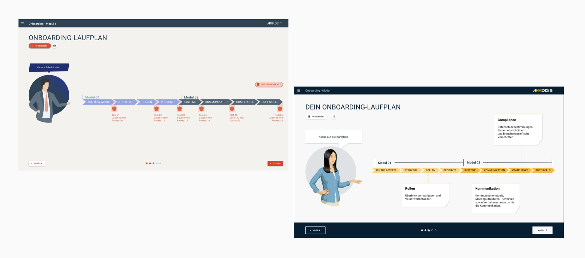
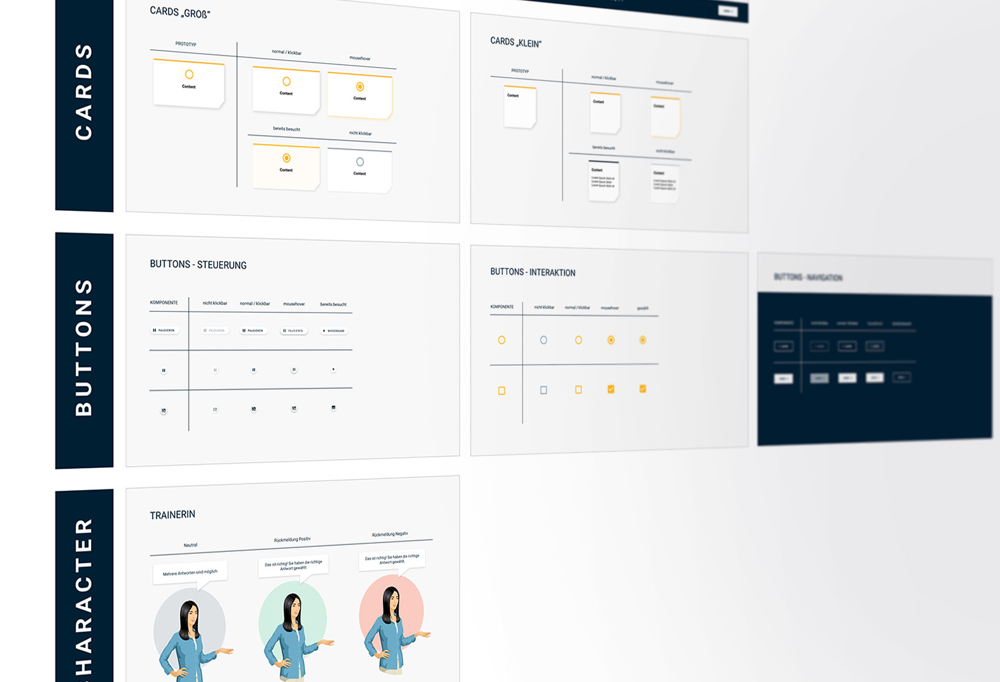

Redesigning Akkodis's internal learning platform after a company merger, aligning brand identity, improving usability, and rebuilding the component library.

After the merger of AKKA and Modis into Akkodis, the internal learning platform still reflected the old brand. Beyond a visual refresh, it needed a thorough usability review: inconsistent components and unclear interface patterns were slowing down both learners and content creators.

I started with a comprehensive audit of all existing UI components, mapping each against the new brand guidelines. Based on the findings, I prioritised the component set for the platform's core workflows, defined clear naming conventions and layout rules, and rebuilt the entire library in Figma with the Akkodis CI applied consistently throughout.
The redesigned AKKAdemy platform offers a reduced, functional interface that puts learning content first. The new component library made course creation faster and more consistent, and served as a design foundation for future updates across other Akkodis platforms.

ELLA – Lifelong Learning with AI

Mobile-First Car UX

Little Food Fighters